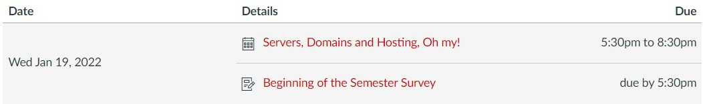
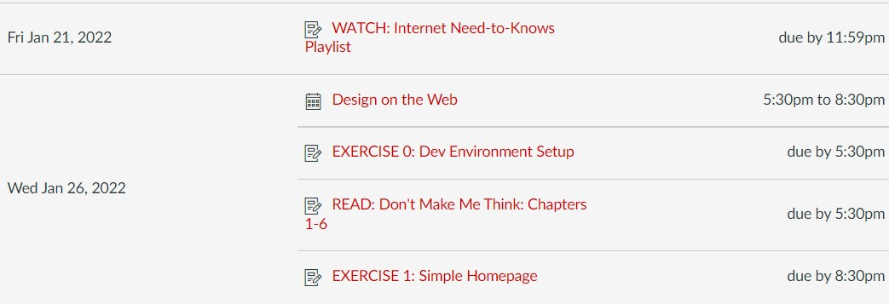
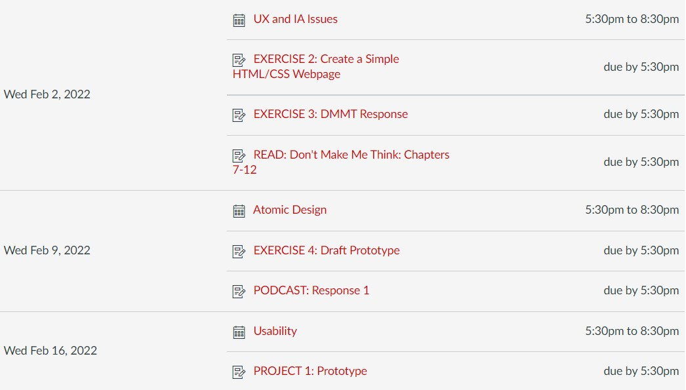
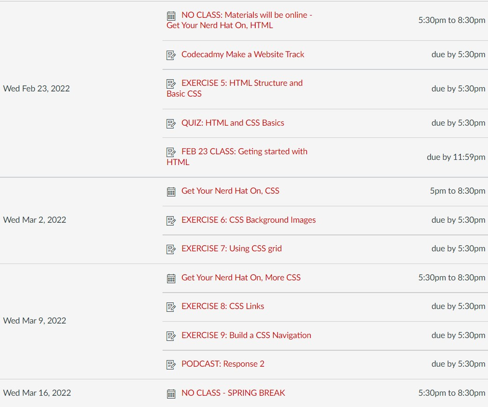

Interactive Media Design
ADPR 458/858: Interactive Media Design studies communication strategies and tactics using interactive media as it relates to front-end web development. We will explore interactive's role in strategic communications, user experience, information architecture, emerging technology, interactive design and development using current web technologies.
Course Materials
- Krug, S. (2014) Don't Make Me Think Revisited: A Common Sense Approach to Web and Mobile Usability, 3rd Edition. New Riders Publishing: Berkeley, CA.
- Laptop
- Dev Tools (we will set all this up in class)
- GitHub Account:https://github.com
- VS Code, https://code.visualstudio.com
- Git: https://git-scm.com/downloads
- GitHub Desktop App:https://desktop.github.com
- Hosting and domain name:https://www.netlify.com
- Codeacademy: https://www.codecademy.com/learn/make-a-website
- Recommended Books
- Garrett, J. (2011) The Elements of user experience: User-centered design for the web and beyond, 2nd Edition. New Riders Publishing: Berkeley, CA
- Robbins, J. (2018) Learning Web Design: A Beginner's Guide to HTML, CSS, JavaScript, and Web Graphics, 5th Edition. O’Reilly Media: Sebastopol, CA.
Course Summary:



